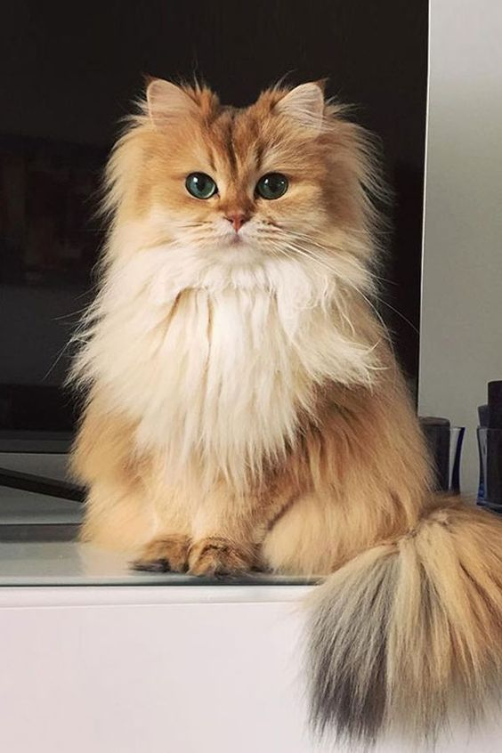
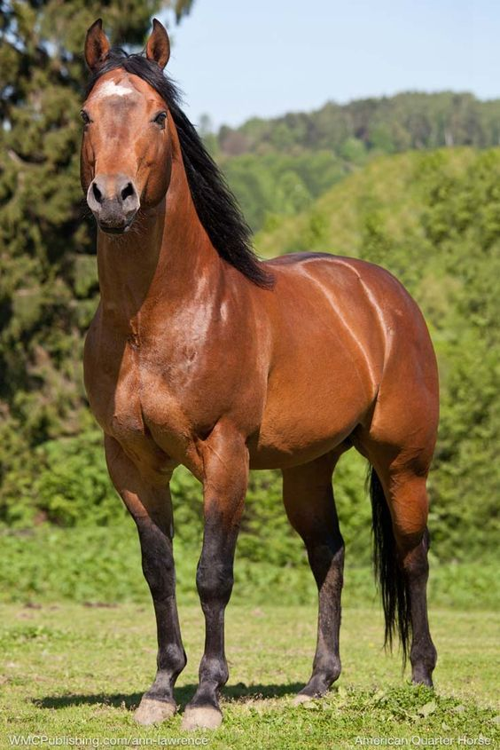

Já buscou por um parceiro para seu pet e achou que isso fosse uma missão impossível? O TinPet está aqui justamente para facilitar e te auxiliar na busca por animais compatíveis com o seu animalzinho de estimação! Além disso, incentivamos o cruzamento natural dos animais ao contrário de incentivar a compra dos mesmos por aí. Por último, mas não menos importante: adote, não compre!
Bem Vindo ao Tinpet!
Sobre o site TinPet:
O site TinPet tem o objetivo de realizar o encontro entre diferentes donos de pet e seus respectivos animais de estimação com outros para que os mesmos realizem o cruzamento de animais. Dessa forma, auxiliaremos na busca por pretendentes para o cruzamento dos pets por meio da tecnologia e daremos auternativas diferentes da compra e venda de animais.
Quem somos nós?
O site foi desenvolvido pelos alunos do terceiro ano integrado em informática do Instituto Federal de Sergipe - Campus Aracaju - Gustavo Santos Oliveira e Maria Eduarda Santos Correia.
Criar Perfil de Pet
Crie um perfil para cada um de seus pets com suas informações específicas!
Criar Perfil

